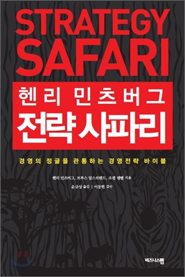

Book 3 <전략 사파리> 야생에서 살아남을 최고의 전략은 무엇일까?
전략은 비즈니스에서 가장 명성이 높으면서도 가장 혼란스러운 분야다. 경영자들은 복잡한 전략 문제를 단번에 해결해주겠다고 약속하는 새로운 용어들과 최신 유행에 끊임없이 시달리고 있다. 시장, 소비자, 기업 등 다양한 부문에서 이루어지는 전략의 세계는 마치 헤어 나오기 힘든 정글처럼 여겨진다. 이 책은 현실적으로 전략 경영을 알아야 함에도 불구하고 회사와 현실에 맞는 지침을 찾을 수 없었던 경영자들의 딜레마를 분석하고, 가장 먼저 무엇을 해야 하는지를 알려준다.